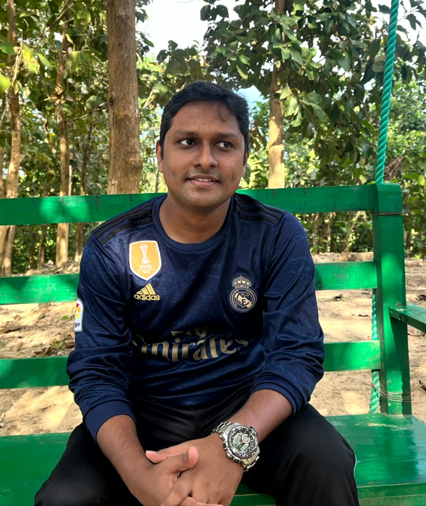

Development of advanced software has fostered my interest in the mentioned fields. Security aspects remain a censorious and complicated challenge for development and maintenance teams. My objective is to research the existing gaps in those areas such as forensic analysis, reverse engineering, and vulnerability assessment, exploring ingenious methodologies to heighten system pliancy and security from multiple viewpoints.